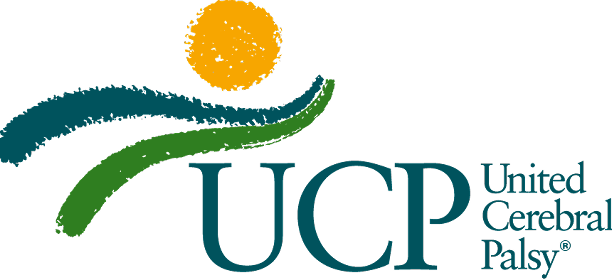
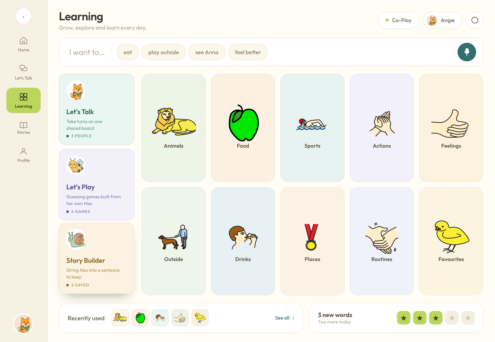
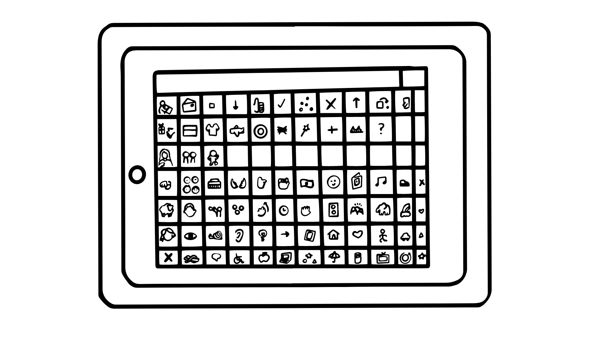
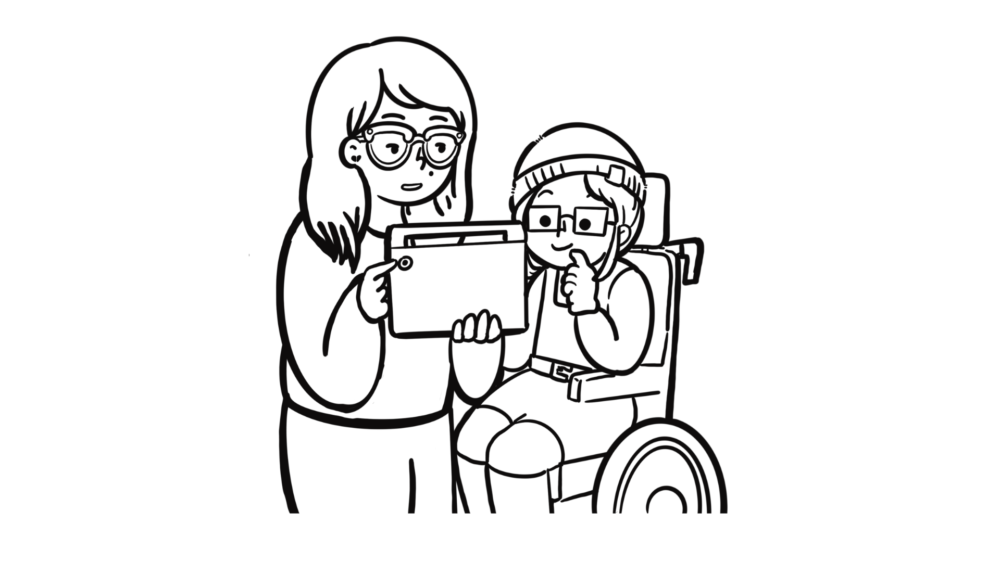
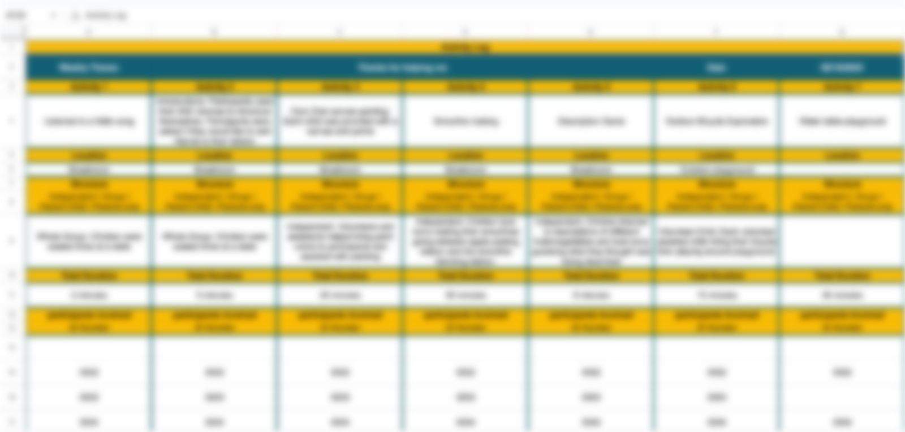
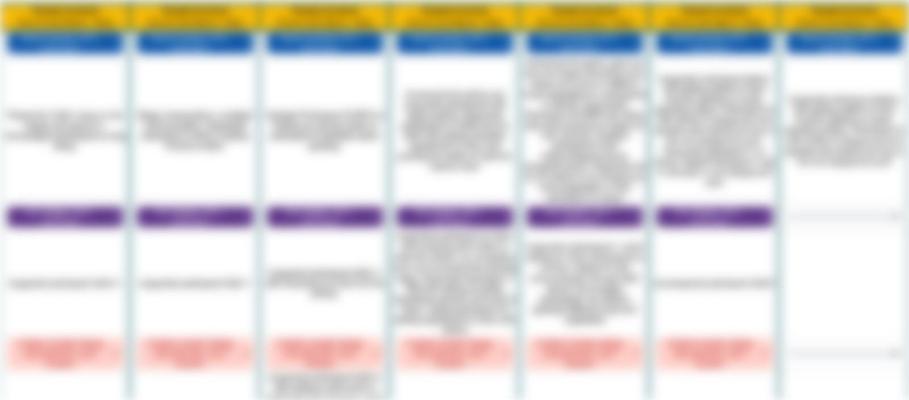
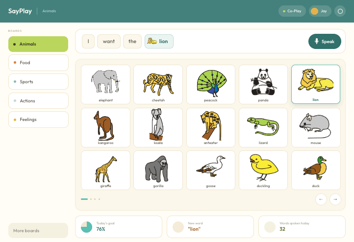
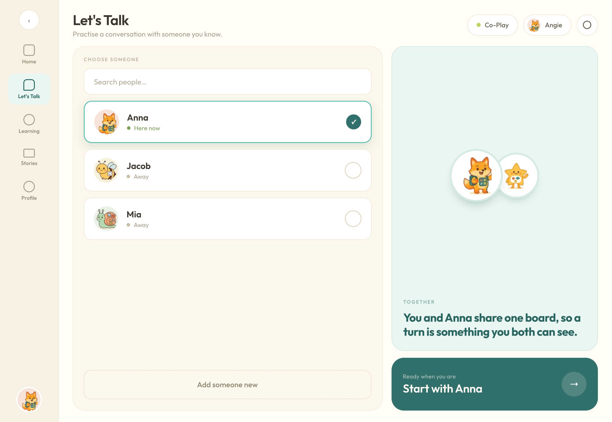
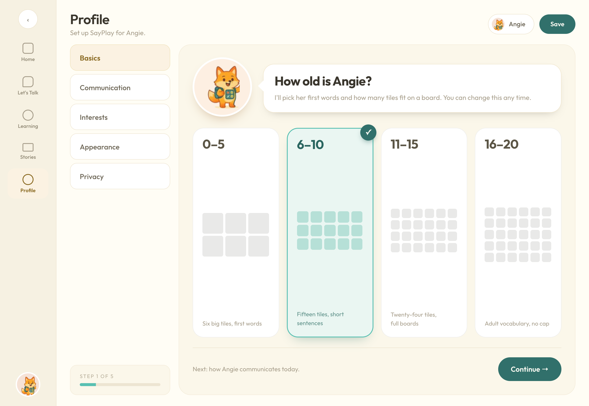
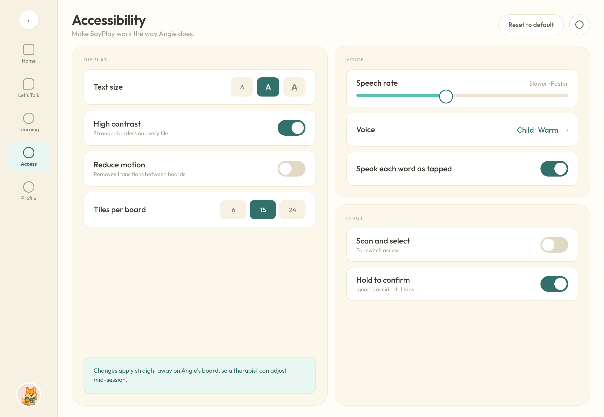

Contents
Case study · 2025
A digital AAC experience that helps children with cerebral palsy communicate through play
{{ m.k }}
{{ m.v }}
Designing communication around the way children actually play, feel, and connect
AAC, Augmentative and Alternative Communication, supports people who cannot rely on speech alone to communicate.
Overview
SayPlay is an AAC experience designed for young children with cerebral palsy. Over eight weeks working with UCP, I explored how existing communication tools could better account for cognitive load, motor accessibility, emotional expression, and social interaction.
Those insights shaped a platform that makes communication feel less like completing a clinical task and more like something a child can use naturally throughout their day.
What I did
- •{{ d }}
My impact
From giving children more vocabulary to reducing the effort it takes to use it.
{{ i.t }}
{{ i.b }}
{{ s.n }}
{{ s.l }}
Design process
Research, design, evaluate.
Hover a stage to see what it involved
{{ p.n }}
{{ p.title }}
{{ it }}
The context
For children with cerebral palsy, communication can require navigating both language and motor barriers.
Children with cerebral palsy may experience speech and motor impairments that make verbal communication difficult or impossible. AAC can provide another route to expression through symbols, words, and speech-generating interfaces.
But for a young child, simply providing more vocabulary does not necessarily make communication more accessible. The interface itself can become part of the barrier.
The problem
Existing AAC tools weren't built around how young children with cerebral palsy actually think and move
Many existing AAC experiences present children with dense symbol grids, layered navigation, and interfaces that require precise interaction. For a child already navigating cognitive or motor constraints, finding the right symbol can become a task of its own.
And another gap kept appearing: existing tools were often better at helping children ask for something than helping them express themselves.

A typical AAC board: roughly ninety tiles, each one a possible answer.

And an adult holding it, often the one who navigates to the right page.
Why does it matter?
{{ f.t }}
{{ f.b }}
Research phase
Market research
Five leading AAC apps revealed the same tension: more vocabulary often meant more complexity
I studied five existing AAC platforms to understand how they approached vocabulary, navigation, customization, motor planning, caregiver involvement, and emotional expression.
{{ c.name }}
- •{{ n }}
|
{{ c.name }}
|
|
|---|---|
| {{ r.label }} |
{{ line }}
|
Research
Eight weeks at UCP helped me understand what accessibility looked like beyond the screen
Working around therapists, caregivers, and children exposed patterns that weren't obvious from looking at AAC interfaces alone.
Perspectives across speech-language pathology, occupational therapy, and physical therapy repeatedly converged around four barriers: cognitive overload, emotional expression, social engagement, and adult dependence.
{{ s.n }}
{{ s.l }}
Data collection
Every session was logged on site: activity, location, structure, duration, participants, and a support note for each clinician involved. Blurred here, because the log holds participant identifiers and clinician names.


Affinity map
Clustered from the session log kept on site: what each activity actually required before a child could take part.
{{ col.theme }}
{{ n }}
{{ col.tag }}
Key research insights
The moments where the interface demanded the most effort were often the moments when the child had the least to spare.
{{ t.k }}
{{ t.n }}
{{ t.q }}
{{ t.v }}
{{ t.imp }}
Design phase
We reframe the challenge
How might we design an AAC experience that feels less like operating a tool and more like communicating through play?
From
How do I make an AAC board easier to use?
To
How do I make communication itself easier to access?
That distinction shaped the rest of SayPlay.
Design principles
{{ p.n }}
{{ p.t }}
{{ p.b }}
Design goal
Help children communicate more independently by reducing the effort between what they want to express and how they express it.
Ideation
Mapping every screen before adding a single colour
Low-fidelity screens for all three roles: the child's communication board and story builder, the co-play activity flows, and the parent and therapist dashboards. Working in grey kept the focus on hierarchy, button size, and how few taps it takes to say something.

Design explorations
INSIGHT 01
Children were spending too much effort finding language.
The research repeatedly pointed to cognitive overload: dense boards and layered navigation could make locating a symbol more difficult than the act of communicating itself. That raised the first design question: how much should SayPlay show at once?
Iteration
Trade-off: maximum vocabulary visible vs fewer, larger targets
I explored ways to simplify the board while keeping essential vocabulary immediately accessible. Rather than maximizing the number of symbols visible at once, SayPlay prioritizes larger targets, predictable locations, and a smaller set of contextually relevant choices.
The direction I carried forward
Fewer choices. Faster communication.
The final board keeps primary navigation fixed and reduces the amount of visual searching required to move between common communication areas.

Before · existing AAC
{{ n }}
After · SayPlay
{{ n }}
INSIGHT 02
Requesting something isn't the same as expressing yourself.
One clinician observation captured a gap I kept seeing across the research.
“She can ask for juice, but she can't tell me she's frustrated.”
That became more than a vocabulary problem. It changed what I thought the product needed to support.
Iteration
Trade-off: emotions as a category inside the board vs a board of their own
Instead of treating feelings as a secondary category buried within the board, SayPlay brings emotional vocabulary into the child's everyday communication experience: a board of its own, alongside Food and Actions.
The design decision
Feeling is vocabulary, not decoration.
Children can communicate emotional states alongside needs, choices, and activities, expanding AAC beyond functional requests.
INSIGHT 03
Communication doesn't become natural if it only happens during therapy.
Research also highlighted a social gap. AAC could become something a child used with a therapist rather than something they reached for spontaneously with another child. So I asked: what if practicing communication felt more like playing together?
Iteration
Trade-off: practice separated from play vs communication inside the interaction
Let's Talk introduces shared communication experiences with peers and caregivers. Instead of separating practice from social interaction, the feature creates opportunities to use AAC inside the interaction itself.
The design decision
AAC as connection, not just communication.

INSIGHT 04
Independence for the child still requires flexibility for the adults supporting them.
Every child communicates differently, and needs can change across settings and over time. Caregivers and therapists therefore need meaningful control over the experience, without turning everyday communication back into something that depends on them.
Iteration
Trade-off: adult controls inside the child's interface vs a separate caregiver surface
Design strategy
Give adults control behind the experience, not inside every interaction.
SayPlay separates configuration from everyday communication. Caregivers can adjust communication style, text size, contrast, tile count, speech rate, and access settings while the child's primary experience remains consistent and predictable.


Design system
One system, designed for different hands.
The component library was built around large interaction targets, clear hierarchy, high contrast, and adaptable layouts. Rather than treating accessibility as a final compliance check, these constraints shaped the components from the beginning.
{{ s.t }}
{{ s.b }}
{{ p.hex }}
Visual language
A communication tool for children should feel like it belongs to them
SayPlay uses warm color, illustration, and four original avatar characters to move away from the clinical feeling common to assistive technology.
The goal wasn't to make accessibility look childish. It was to make the experience feel inviting enough that a child might choose to return to it.
Final design
Bringing communication, play, and independence into one experience
The final prototype brings together the communication board, emotional vocabulary, social interaction, caregiver controls, and accessibility settings in one system.
“I'm frustrated” matters as much as “I want juice.”
Auto-playing. Hover to take over
Reflection
The best interfaces disappear.
This project changed how I think about accessibility. It wasn't one requirement I could solve through target sizes, contrast ratios, or reduced navigation alone. Every decision changed the amount of effort required between a child having something to say and actually being able to say it.
And that ultimately became the standard I cared about most.
{{ t.t }}
{{ t.b }}
The technology shouldn't be the experience. The child's voice should be.
What's next
A prototype is not a product in a child's hands
{{ n.n }}
{{ n.stage }}
{{ n.t }}
{{ n.b }}
Thanks for stopping by.
Always happy to talk design, research, or a new idea.
Made with ♥ by Laila · 2026
↑ Back to top